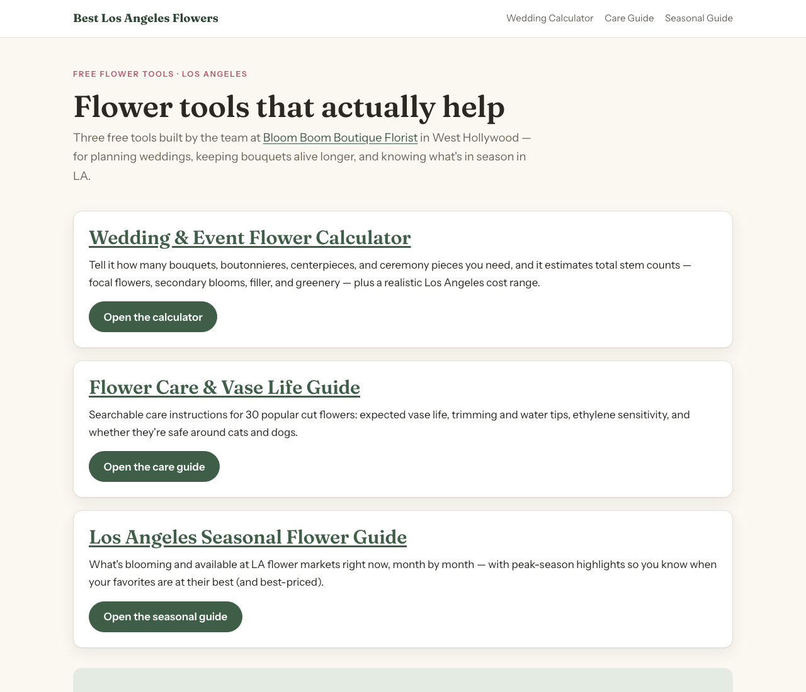
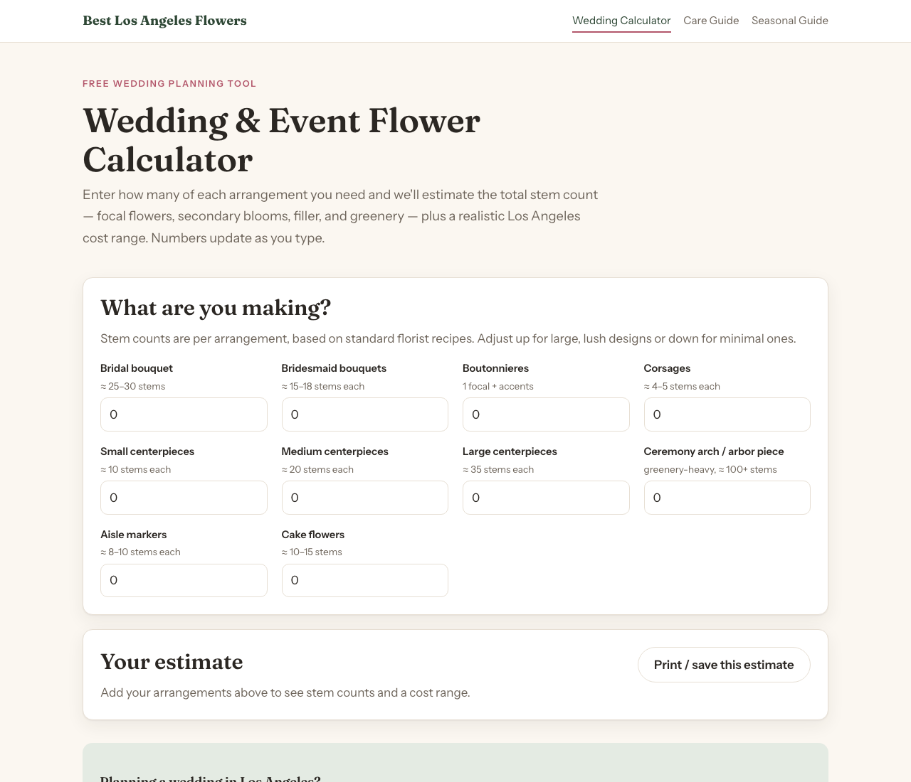
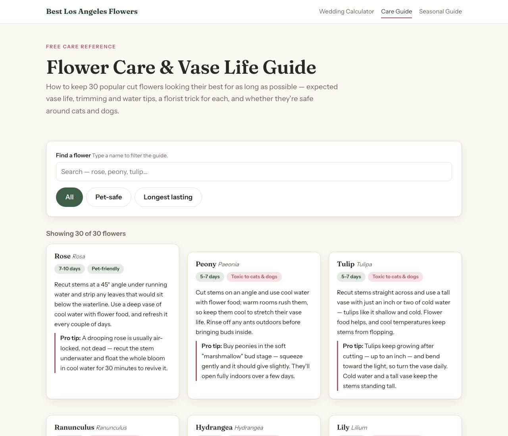
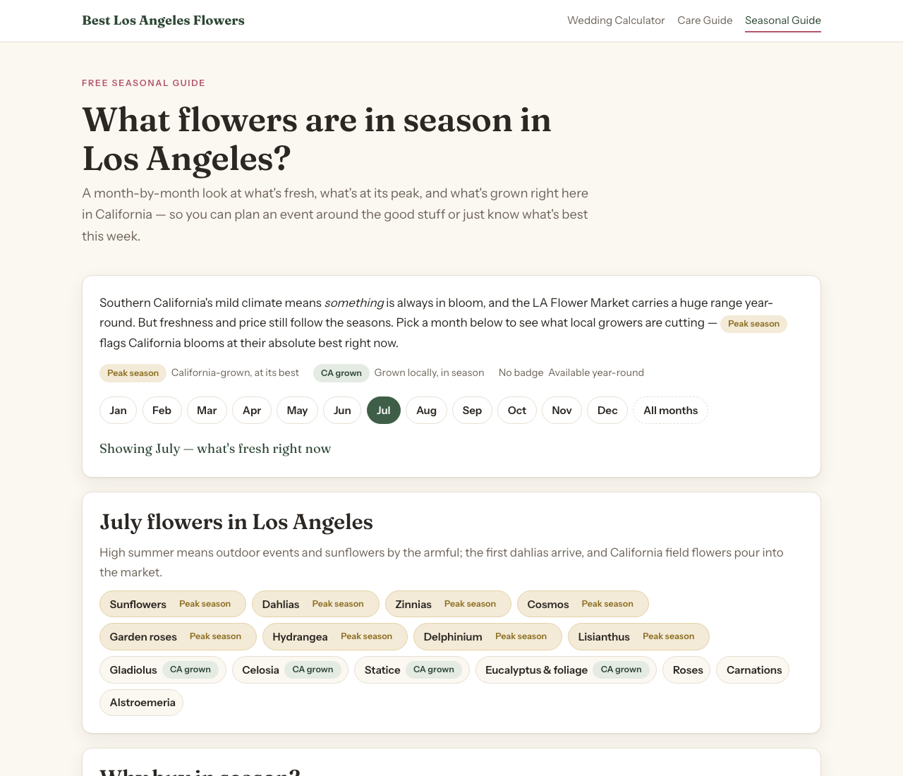

Built three flower tools + SEO README
- Brainstormed ~10 candidate tools; picked three for search demand + utility + local-SEO fit
(design spec:
docs/superpowers/specs/2026-07-22-flower-shop-tools-design.md). - Built a shared design system (
assets/style.css: cream/green/rose palette, Fraunces + Instrument Sans) and landing page, then three static tools — no frameworks, no build step: Wedding & Event Flower Calculator (integer stem recipes per arrangement, live LA cost range), Flower Care & Vase Life Guide (30 flowers, static HTML for crawlability, search + pet-safe/longest-lasting filters, ASPCA-checked toxicity flags), and LA Seasonal Flower Guide (12 static month sections, defaults to current month). - Every page carries identical NAP +
FloristJSON-LD for Bloom Boom Boutique Florist (620 N La Cienega Blvd., West Hollywood · 424-421-0200 · bloom-boom.shop); README rewritten with the same shop reference; MIT license added. - Verification: no type-checker/linter applies (plain HTML/JS) — instead ran Node syntax checks on all
inline scripts + JSON-LD (all pass), HTTP smoke test (all pages 200), NAP-consistency grep (4/4 pages),
and headless-Chrome renders confirming layout and JS behavior. Commits
7066779,b2b18ed,77984c9,ad24cff.



